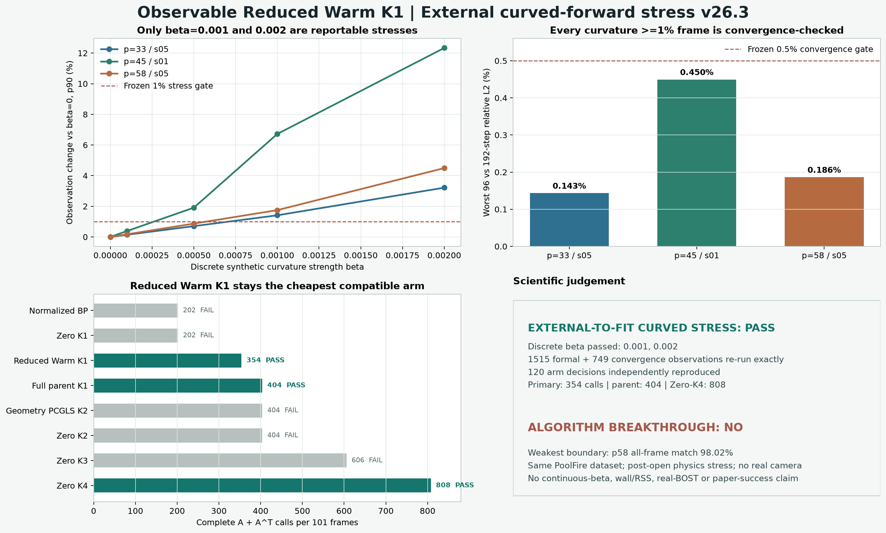

{kind=link}
1515 个正式观测
3 轨迹 × 5 beta × 101 帧，192-step 重新计算，最大相对与绝对差均为 0。
冻结的 Observable Reduced Warm K1 没有重训，也没有改门槛。三条 v24 external-to-fit PoolFire 组合改用场依赖 eikonal 曲折光线生成 observation 后，它在真正达到预注册压力强度的两个离散档 beta=0.001、0.002 上逐轨迹通过，仍以 202A+152A^T=354 成为最便宜兼容臂。最高档 p45 的 observation 改变 p90 为 12.34%，worst 为 16.36%；但这仍是同一公开 CFD 数据集上的 synthetic proxy，不是真实相机 BOST。
本轮比 v25 多跨了一步：三条轨迹组合不在模型拟合集合中，同时 observation forward 与 straight inverse 不再完全一致。结果支持“优势不依赖完全共享的线性正演”这一有限结论。

协议要求每条轨迹至少有 10 帧的 observation 曲率差达到 1%，才允许把该 beta 写进鲁棒性结论。这个门避免拿近零扰动换取“所有 beta 都通过”。
dr/ds=t; dt/ds=(I-ttᵀ)grad(n)/n; n=1+beta(rho-mean(rho))
| beta | p33 非平凡帧 | p45 非平凡帧 | p58 非平凡帧 | 三轨迹可报告 |
|---|---|---|---|---|
| 0.0001 | 0 | 0 | 0 | NO |
| 0.0005 | 0 | 92 | 2 | NO |
| 0.001 | 69 | 101 | 91 | YES |
| 0.002 | 101 | 101 | 101 | YES |
| 最高档轨迹 | 曲率差 p50 | p90 | worst | 96/192 worst | 曲率/数值比 |
|---|---|---|---|---|---|
| p33-s05 | 2.470% | 3.215% | 3.718% | 0.143% | 22.41 |
| p45-s01 | 9.708% | 12.335% | 16.360% | 0.450% | 27.44 |
| p58-s05 | 3.181% | 4.494% | 5.234% | 0.186% | 24.11 |
通过要求 all 101 帧、odd 50 帧和同一组曲率差至少 1% 的帧同时满足冻结兼容包络。调用优势只指完整 A/A^T 账；v26 没有重新测 wall time 或内存。
| 方法 | A | Aᵀ | 总调用 | 三条 beta=0.002 共同判决 |
|---|---|---|---|---|
| Normalized BP | 101 | 101 | 202 | FAIL |
| Zero CGLS K1 | 101 | 101 | 202 | FAIL |
| Observable Reduced Warm K1 | 202 | 152 | 354 | PASS |
| Full parent Warm K1 | 202 | 202 | 404 | PASS |
| Zero CGLS K2 | 202 | 202 | 404 | FAIL |
| Geometry PCGLS K2 | 202 | 202 | 404 | FAIL |
| Zero CGLS K3 | 303 | 303 | 606 | FAIL |
| Zero CGLS K4 reference | 404 | 404 | 808 | PASS |
| 最高档轨迹 | all-frame match | odd-frame match | nontrivial match | harm | 结论 |
|---|---|---|---|---|---|
| p33-s05 | 101/101 | 50/50 | 101/101 | 0 | PASS |
| p45-s01 | 101/101 | 50/50 | 101/101 | 0 | PASS |
| p58-s05 | 99/101 | 48/50 | 99/101 | 0 | PASS，最薄弱 |
p58 的两帧越过严格 match 线，但没有越过 harm 线；这是冻结兼容包络允许的边界，不是 100% framewise equality。页面保留 99/101，避免把通过写成完美。
validator 使用同一冻结输入，但重新生成每个曲折光线 observation、每个收敛对照、非平凡帧 mask、八方法输出与逐 beta 判决。
3 轨迹 × 5 beta × 101 帧，192-step 重新计算，最大相对与绝对差均为 0。
固定检查点并入每个曲率差至少 1% 的帧，96-step 收敛值最大差为 0。
3×5×8 个 arm decision、调用账、兼容性与严格成本支配全部一致。
v26.1 在 truth 前因帧集未绑定而停止；v26.2 结果值未读，因离散措辞和全 mask 收敛覆盖不足而重冻 v26.3。
真正新增的是“新组合 + 非线性 forward mismatch”同时出现时，固定 warm initializer 仍保持兼容与调用优势。这排除了一种重要失败解释，但没有跨过真实成像链。
不重训、不调门；两个有效离散压力档逐轨迹通过；更便宜对照未共同通过；forward 与 inverse 全量复算。
连续 beta、真实 rho-to-n、相机/背景/位移提取、噪声与标定误差、独立数据集、official test、wall/RSS。
important_reproducible_physics_robustness_increment=true，但 algorithm_breakthrough=false。决定性下一门仍是组内真实 BOST：用重复测量与标定不确定度定义同精度，再原样测完整 A/A^T、wall 与全流程 RSS。